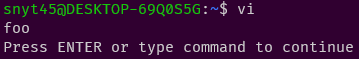

可読性をあげるため、vimrcを分割する方法について調べているとruntime!して読み込む方法が良さそうだった。
例えば、次のような感じ。
runtime! init/*.vim
runtime! plugins/*.vim
runtime!がどういう挙動するか不明だったので、
実際にruntime!を使ってファイルが読み込まれるのかの検証をしてみた。
runtime!
構文
runtime[!] [where] {file}
!をつけると、見つかったファイル全てのファイルを読み込む!をつけなければ、最初に見つかったファイルだけを読み込む[where]を省略すると、runtimepathのディレクトリ以下の{file}を検索する{file}がワイルドカードを含んでいると展開される。
runtimepathを調べる
:set runtimepathで調べることができる。
:set runtimepathの結果は以下の通り。
runtimepath=~/.vim,~/.vim/pack/mypackage/start/vimdoc-ja,/var/lib/vim/addons,/etc/vim,/usr/share/vim/vimfiles,/usr/share/vim/vim81,/usr/share/vim/vimfiles/after,/etc/vim/after,/var/lib/vim/addons/after,~/.vim/after
runtime!でファイルが読み込まれるか検証する
vimのディレクトリ構成は以下を想定している。
~/.vim/vimrcからruntime!して~/.vim/init以下のfoo.vimを読み込むか検証する。
.vim
├── vimrc # vimrc
├── init # vimの基本設定
│ └── foo.vim
読み込むためのファイルを~/.vim/init/foo.vimに作成。
foo.vimはecho "foo"とする。
~/.vim/vimrcは以下のようにする。
runtime! init/foo.vim
この状態で、viとしてvimを開いてみると、fooと出力されているので読み込まれていることが確認できた。

ディレクトリを指定する際は、runtimepath配下のディレクトリから指定すればよさそうだ。
例えば、~/.vim/init/foo.vimを読み込む場合で、runtimepathが~/.vimの場合はruntime! init/foo.vimとすればよい。